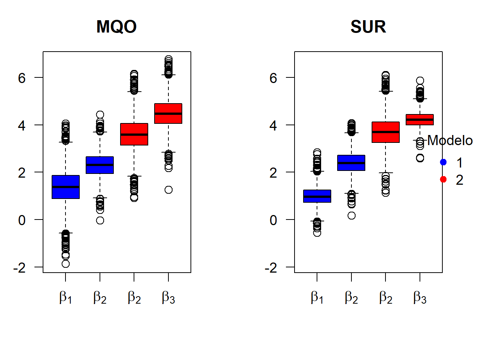
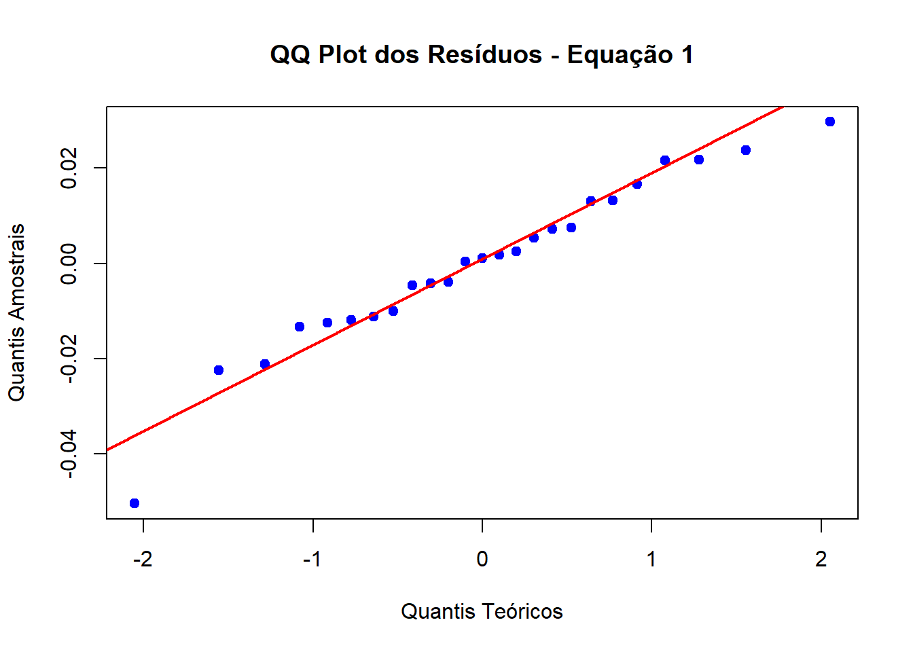
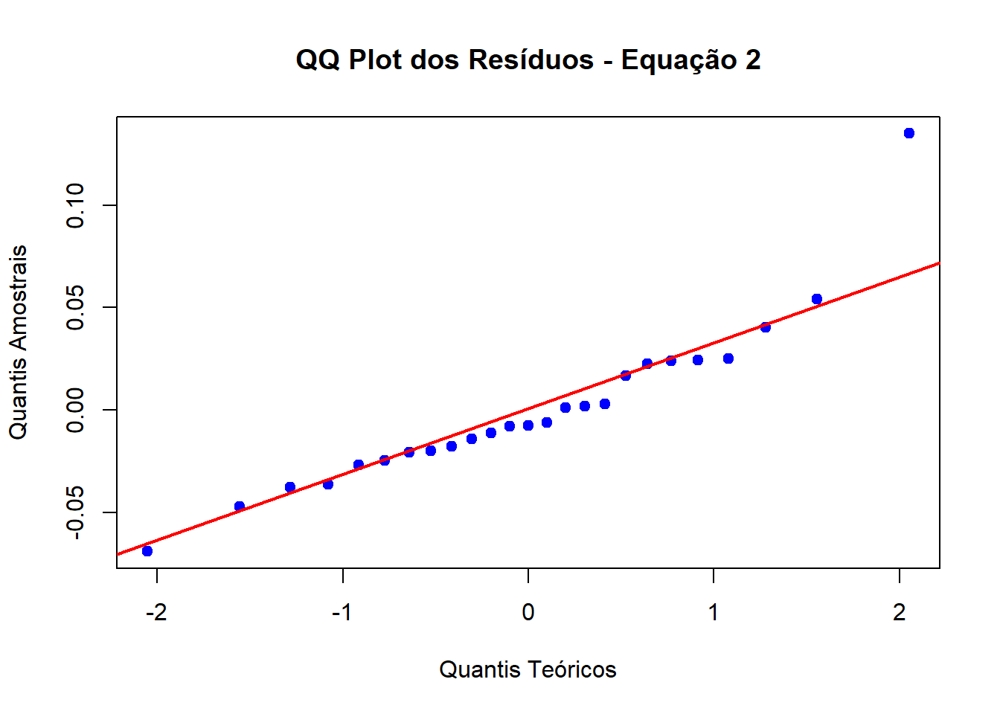
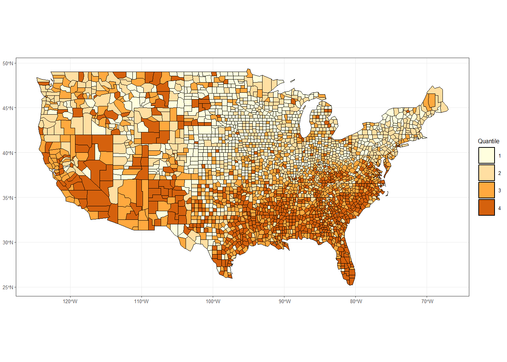
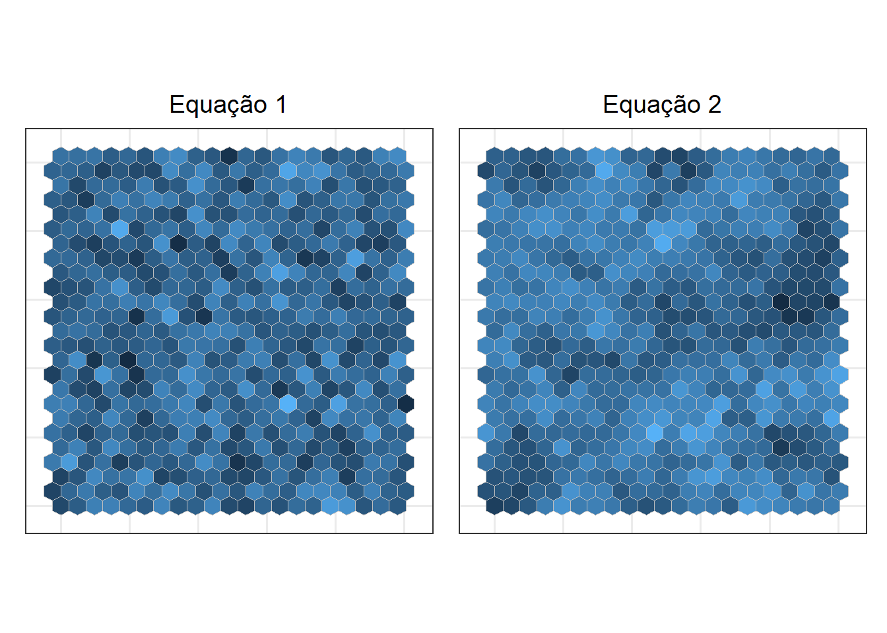
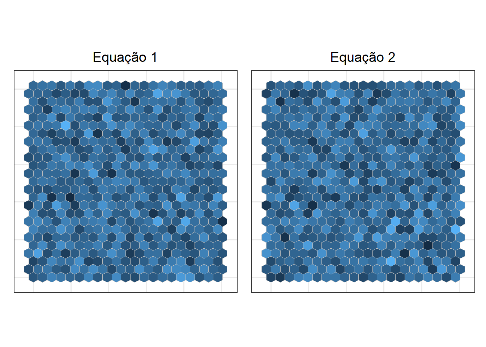

set.seed(282829)
require(MASS)
require(systemfit)
require(furrr)
# parametros
mu <- c(2, 5, 10, 20)
sigma <- matrix(c(4, 2, 2, 2,
2, 8, 3, 3,
2, 3, 9, 3,
2, 3, 3, 12), 4)
eq1 <- y1 ~ x1 + x2 # equação 1
eq2 <- y2 ~ x2 + x3 # equação 2
plan('multisession', workers = 5) # paralelização
betas <- future_map(1:3000, ~{
# gerando amostra
pop <- mvrnorm(30, mu, sigma)
erro <- mvrnorm(30, c(0,0), matrix(c(40, 37, 37, 45), 2))
db <- data.frame(
y1 = 1*pop[,1] + 2*pop[,2] + pop[,4] + erro[,1],
y2 = 3*pop[,2] + 4*pop[,3] + 2*pop[,4] + erro[,2],
x1 = pop[,1], x2 = pop[,2], x3 = pop[,3]
)
# ajustando modelos
fit_SUR <- systemfit(list(mod1 = eq1, mod2 = eq2), method = 'SUR', data = db,
control = systemfit.control(methodResidCov = 'noDfCor'))
fit_MQO <- systemfit(list(mod1 = eq1, mod2 = eq2), data = db)
# resultados
c(coef(fit_MQO)[-c(1,4)], coef(fit_SUR)[-c(1,4)])
}, .options=furrr_options(seed=TRUE)) |>
do.call(rbind, args=_)
colnames(betas) <- c('MQO1_x1', 'MQO1_x2', 'MQO2_x2', 'MQO2_x3',
'SUR1_x1', 'SUR1_x2', 'SUR2_x2', 'SUR2_x3')Modelo SUR
Trabalho - ME715
Modelo SUR
\[ \DeclareMathOperator{\tr}{tr} \DeclareMathOperator{\posto}{posto} \DeclareMathOperator{\Cov}{Cov} \DeclareMathOperator{\V}{\mathbb{V}} \DeclareMathOperator{\E}{\mathbb{E}} \DeclareMathOperator{\p}{\mathbb{P}} \newcommand{\bs}[1]{\boldsymbol{#1}} \newcommand{\bm}[1]{\mathbf{#1}} \newcommand{\RR}{\mathbb{R}} \newcommand{\NN}{\mathbb{N}} \newcommand{\bu}{\bullet} \newcommand{\norm}{\mathcal{N}} \newcommand{\spc}{\hspace{0.8cm}} % Espaçamento \]
Motivação
- O que é o Modelo SUR?
- Por que utilizar o Modelo SUR?
- Como estimar o Modelo SUR?
- Modelo SUR ou MQO? Quais as vantagens e desvantagens?
Modelo SUR
Os modelos de regressões lineares aparentemente não correlacionados ou modelo SUR (Seemingly Unrelated Regression) é um modelo multivariado, isto é, busca explicar múltiplas variáveis dependentes. Além disso, pode ser definido através de \(g\) modelos lineares indexados por \(i\), dados por:
\[\begin{equation}\tag{1}\label{eq: modelo sur} \bs y_i = \bs X_i \bs\beta_i + \bs u_i \;, \spc i=1,\dots,g \end{equation}\]
onde
- \(\bs y_i\) denota o vetor de tamanho \(n\) da \(i\)-ésima variável dependente;
- \(\bs X_i\) denota a matriz de dimensão \(n \times k_i\) de regressores da \(i\)-ésima equação;
- \(\bs\beta_i\) denota o vetor \(k_i\)-dimensional de parâmetros;
- \(\bs u_i\) denota o vetor de erros de tamanho \(n\).
Modelo SUR
O modelo SUR pode ser escrito da seguinte forma:
\[\bs y_\bu = \bs X_\bu \bs\beta_\bu + \bs u_\bu\]
\[ \begin{bmatrix} \bs y_1 \\ \bs y_2 \\ \vdots \\ \bs y_g \end{bmatrix} = \begin{bmatrix} \bs X_1 & \bs0 & \dots & \bs0\\ \bs0 & \bs X_2 & \dots & \bs0\\ \vdots & \vdots & \ddots & \vdots\\ \bs0 & \bs0 & \dots & \bs X_g\\ \end{bmatrix} \begin{bmatrix} \bs\beta_1 \\ \bs\beta_2 \\ \vdots \\ \bs\beta_g \end{bmatrix} + \begin{bmatrix} \bs u_1 \\ \bs u_2 \\ \vdots \\ \bs u_g \end{bmatrix} \]
onde,
- \(\bs y_\bu\) é um vetor de tamanho \(ng\) com os vetores \(\bs y_1, \dots, \bs y_g\) empilhados;
- \(\bs X_\bu\) é uma matriz diagonal com blocos \(\bs X_1, \dots, \bs X_g\);
- \(\bs\beta_\bu\) contém os vetores \(\bs\beta_1, \dots, \bs\beta_g\) empilhados;
- \(\bs u_\bu\) é um vetor de tamanho \(ng\) com os vetores \(\bs u_1, \dots, \bs u_g\) empilhados.
Suposições
- \(\E(u_i \mid \bs X_i) = 0\), \(\forall i\), isto é, fracamente exógenos (então, por que não utilizar MQO? 🤔);
- \(\E(\bs u_i \bs u_i') = \sigma_{ii} I_n\) e \(\E(u_{ti}u_{tj}) = \sigma_{ij}\), ou seja, a variância do erro é constante em cada equação, mas pode variar entre equações;
- \(\E(u_{ti}u_{sj}) = 0\), \(t \neq s\) e \(i \neq j\).
. . .
onde \(\sigma_{ij}\) é o elemento \((ij)\) da matriz \(\Sigma_{g \times g} > 0\), denominada de matriz de covariância contemporânea.
. . .
Portanto, fica definido o modelo SUR por meio das \(g\) equações em \(\eqref{eq: modelo sur}\) e das suposições apresentadas.
Suposições
Correlação contemporânea?

. . .
A correlação contemporânea é quando existe correlação entre os erros dos diferentes modelos para um mesmo indivíduo. Seu surgimento é devido à omissão de variáveis, já que as informações presentes nas preditoras que explicam a variável resposta (mas não entram no modelo) passam a fazer parte do erro.
Vantagens e Desvantagens
Vantagem: Com a adaptação feita, o modelo passa a considerar a correlação presente no erro, aumentando sua precisão.
Desvantagem: Quando o número de indivíduos é muito grande, o número de parâmetros a ser estimado também será, podendo levar à estimativas pouco fidedignas do modelo.
Estimação
Produto de Kronecker
Seja \(A\) uma matriz \(p \times q\) e \(B\) uma matriz \(r \times s\). Então, o produto de Kronecker, denotado por \(\otimes\), entre \(A\) e \(B\) é dado por: \[ A \otimes B = \begin{bmatrix} a_{11} B & \dots & a_{1q}B\\ \vdots & \ddots & \vdots\\ a_{p1} B & \dots & a_{pq}B\\ \end{bmatrix} \]
Propriedades:
- \((A \otimes B)' = A' \otimes B'\)
- \((A \otimes B)(C \otimes D) = (AC) \otimes (BD)\)
- \((A \otimes B)^{-1} = A^{-1} \otimes B^{-1}\)
Estimação
O estimador de MQO para o modelo SUR é dado por: \[\bs{\hat\beta}_{\bu}^{MQO} = (\bs X_\bu'\bs X_\bu)^{-1}\bs X_\bu' \bs y_\bu\]
. . .
Além disso,
\[ \E(\bs u_\bu \bs u_\bu') = \begin{bmatrix} \E(\bs u_1 \bs u_1') & \cdots & \E(\bs u_1 \bs u_g')\\ \vdots & \ddots & \vdots\\ \E(\bs u_g \bs u_1') & \cdots & \E(\bs u_g \bs u_g') \end{bmatrix} = \begin{bmatrix} \sigma_{11} I_n & \cdots & \sigma_{1g} I_n\\ \vdots & \ddots & \vdots\\ \sigma_{g1} I_n & \cdots & \sigma_{gg} I_n \end{bmatrix} = \bs\Sigma_\bu \] mas \(\bs\Sigma_\bu = \Sigma \otimes I_n \neq \sigma I\).
. . .
Portanto, o estimador por MQO não é BLUE 😔.
MQG
Para o caso de \(\Sigma\) conhecida, pode-se utilizar MQG, então
\[\bs{\hat\beta}_\bu^{MQG} = (\bs X_\bu' (\Sigma^{-1} \otimes I_n) \bs X_\bu)^{-1} \bs X_\bu' (\Sigma^{-1} \otimes I_n) \bs y_\bu\]
\[\V(\bs{\hat\beta}_\bu^{MQG} \mid \bs X) = (\bs X_\bu' (\Sigma^{-1} \otimes I_n) \bs X_\bu)^{-1} = \begin{bmatrix} \sigma_{11} \bs X_1' \bs X_1 & \cdots & \sigma_{ig} \bs X_1' \bs X_g\\ \vdots & \ddots & \vdots\\ \sigma_{g1} \bs X_g' \bs X_1 & \cdots & \sigma_{gg} \bs X_g' \bs X_g \end{bmatrix}^{-1}\]
Por que não MQO?
- Se \(\sigma_{ij} = 0\), \(\forall i \neq j\), então não há ganhos em aplicar outro método que não seja MQO;
- Se \(\bs X_i = \bs X_j\), \(\forall i,j\), então MQO e MQG são iguais;
- Quanto maior a correlação entre \(u_{ti}\) e \(u_{tj}\), então maior a eficiência de MQG sobre MQO;
- Quanto menor for a correlação entre \(\bs X_i\) e \(\bs X_j\), \(i \neq j\) maior serão os ganhos em utilizar MQG do que MQO.
MQGF
Contudo, no geral, \(\Sigma\) não é conhecida. Então, por MQGF:
. . .
\[\hat\Sigma = \frac{1}{n} \bm{\hat U}'\bm{\hat U}\] onde \(\bm{\hat U} = \begin{bmatrix} \bs u_1 & \cdots & \bs u_g \end{bmatrix}\), isto é, uma matriz \(n \times g\) cujas colunas são os vetores de resíduo \(\bs{\hat u}_i\) da \(i\)-ésima equação, obtidos por MQO. Além disso, utilizar \(n\) produz um estimador viesado, então, se \(k_i = k_j = k\), \(\forall i\neq j\), pode ser utilizado \(n-k\) para obter um estimador não viesado para os elementos da diagonal de \(\hat\Sigma\).
. . .
\[\bs{\hat\beta}_\bu^{MQGF} = (\bs X_\bu' (\hat\Sigma^{-1} \otimes I_n) \bs X_\bu)^{-1} \bs X_\bu' (\hat\Sigma^{-1} \otimes I_n)\bs y_\bu\]
\[\V(\bs{\hat\beta}^{MQGF} \mid \bs X) = (\bs X_\bu' (\hat\Sigma^{-1} \otimes I_n) \bs X_\bu)^{-1}\]
. . .
Ademais, substituir \(\Sigma\) por \(\hat\Sigma\) afeta as propriedades de MQG, principalmente quando \(n\) é pequeno e \(g\) é grande.
Simulação
Tabela 1: Modelo 1 - Média (Desvio Padrão)
| Tipo | \(\beta_1\) | \(\beta_2\) |
|---|---|---|
| MQO | \(1.368\; (0.756)\) | \(2.299\; (0.534)\) |
| SUR | \(0.982\; (0.402)\) | \(2.394\; (0.502)\) |
Tabela 2: Modelo 2 - Média (Desvio Padrão)
| Tipo | \(\beta_2\) | \(\beta_3\) |
|---|---|---|
| MQO | \(3.592\; (0.708)\) | \(4.482\; (0.643)\) |
| SUR | \(3.688\; (0.664)\) | \(4.230\; (0.337)\) |
Simulação

Artigo
Mínguez, R., López, F.A., & Mur, J. (2022). spsur: An R Package for Dealing with Spatial Seemingly Unrelated Regression Models. Journal of Statistical Software, 104(11), 1–43. doi: 10.18637/jss.v104.i11.
Contexto
O SUR espacial é uma técninca que incorpora simultaneamente efeitos espaciais e erros correlacionados entre as equações. Sua primeira menção ocorre em Anselin (\(1998\)): “Uma equação para cada período de tempo, a qual é estimada para uma seção transversão de unidades espaciais …”.
O artigo utilizado para a análise disponibiliza o pacote spsur no R, o qual foi desenvolvido para considerar modelos de multiequações com efeitos espaciais e correlação residual.
Modelo
O modelo geral SUR com dependência temporal SUR-GNM (general nesting model) é dado por:
\[\tag{2}\label{eq: surs} \bs y_t = \rho_t \bs W_t^y \bs y_t + \bs X_t \bs\beta_t + \bs W_t^x \bs X_t^* \bs\theta_t + \bs u_t \]
com \(\bs u_t = \lambda_t \bs W_t^u \bs u_t + \bs\varepsilon_t\), \(\E(\bs\varepsilon_t) = 0\) e \(\E(\bs\varepsilon_t \bs\varepsilon_s') = \sigma_{ts}I_N\).
onde:
- \(\bs X_t^*\): é a matriz de regressoras sem o intercepto;
- \(\bs W_t^y\), \(\bs W_t^x\) e \(\bs W_t^u\): são as matrizes de ponderação, com dimensão \(n \times n\);
Modelo
Comumente, utiliza-se \(\bs W = \bs W_t^y = \bs W_t^x = \bs W_t^u\). Então, o modelo \(\eqref{eq: surs}\) pode ser reescrito como:
\[\bs A \bs y = \bs X \bs\beta + (I_{g} \otimes \bs W)\bs X^* \bs\theta + \bs u\] com \(\bs B \bs u = \bs\varepsilon\), \(\bs\varepsilon \sim \norm(\bs 0, \bs\Omega)\).
\(\bs y = \begin{bmatrix} \bs y_1 \\ \vdots \\ \bs y_g\end{bmatrix}\), \(\bs X = \begin{bmatrix} \bs X_1 & \bs0 & \dots & \bs0\\ \bs0 & \bs X_2 & \dots & \bs0\\ \vdots & \vdots & \ddots & \vdots\\ \bs0 & \bs0 & \dots & \bs X_g\\ \end{bmatrix}\), \(\bs\beta = \begin{bmatrix}\bs\beta_1 \\ \vdots \\ \bs\beta_g\end{bmatrix}\), \(\bs\theta = \begin{bmatrix} \bs\theta_1 \\ \vdots \\ \bs\theta_g \end{bmatrix}\), \(\bs u = \begin{bmatrix} \bs u_1 \\ \vdots \\ \bs u_g\end{bmatrix}\), \(\bs\varepsilon = \begin{bmatrix}\bs\varepsilon_1 \\ \vdots \\ \bs\varepsilon_g \end{bmatrix}\)
Modelo
Veja que o modelo apresentado pode ter vários desdobramentos:
- SUR-SIM: modelo com independência espacial (SUR aprendido em aula), \(\rho_t = \lambda_t =0\), \(\bs\theta_t = \bs 0\);
- SUR-SLX: modelo com defasagem espacial em \(\bs X\), \(\rho_t = \lambda_t = 0\);
- SUR-SLM: modelo com defasagem espacial, \(\lambda_t = 0\), \(\bs\theta_t = \bs0\);
- SUR-SEM: modelo com erro espacial, \(\rho_t = 0\), \(\bs\theta_t = \bs0\);
- SUR-SDM: modelo espacial de Durbin, \(\lambda_t = 0\);
- SUR-SDEM: modelo de erro espacial de Durbin; \(\rho_t = 0\);
- SUR-SARAR: modelo de defasagem espacial com erros autorregressivos, \(\bs\theta_t = \bs0\).
. . .
Estimação
É necessário impor que a diagonal de \(\bs W\) seja preenchida por \(0\). Então, assumindo que os erros são normalmente distribuidos, basta maximizar a função log-verossimilhança, dada por:
\[\begin{split} l(\bs y; \bs \eta) = - \frac{ng}{2} \ln(2\pi) - \frac{n}{2}\ln|\bs\Sigma| + g \sum_{t=1}^{g} \ln|\bs B_t| + g \sum_{t=1}^{g} \ln|\bs A_t| - \\-\frac{1}{2}(\bs A \bs y - \bs{\bar X}[\bs\beta; \bs\theta]')'\bs B' \bs\Omega^{-1} \bs B(\bs A \bs y - \bs{\bar X}[\bs\beta; \bs\theta]') \end{split}\] onde \(\bs\eta'=[\bs\beta'; \bs\theta'; \rho_1;\dots;\rho_g; \lambda_1;\dots; \lambda_g; \sigma_{ij}]\), \(\bs\Lambda = diag(\lambda_1, \dots, \lambda_g)\), \(\bs\Gamma = diag(\rho_1,\dots,\rho_g)\), \(\bs{\bar X} = [\bs X; (T_g \otimes \bs W) \bs X^*]\), \(\bs A = I_{n g} - \bs\Gamma \otimes \bs W\), \(\bs B = I_{ng} - \bs\Lambda \otimes \bs W\) e \(\bs\Omega = \bs\Sigma \otimes I_n\).
Ao todo, temos que estimar \(2 \sum_{i=1}^g k_i + g + \frac{g(g+1)}{2}\) parâmetros 😨😱.
Aplicação 1
Conjunto de Dados
Banco de dados:
- spc: este banco de dados ilustra um exemplo classico da curva de Phillips retirado de Anselin (\(1988\), pp. \(203\)–\(211\)).
. . .
Curva de Phillips
A curva de Phillips é uma teoria macroeconômica que mostra a relação entre a taxa de desemprego e a taxa de inflação no curto prazo. Ela foi criada pelo economista neozelandês Alban William Phillips, a partir de dados do Reino Unido entre \(1861\) e \(1957\).
spc
Objetivo do estudo: analisar como diferentes variáveis impactaram as mudanças nas taxas salariais de \(1981\) para \(1983\) em \(25\) condados do sudoeste de Ohio.
Sejam as equações:
\[\text{Equação 1:} \quad WAGE_{83} = \beta_{10} + \beta_{11} UN_{83} + \beta_{12} NMR_{83} + \beta_{13} SMSA + u_{83}.\]
\[\text{Equação 2:} \quad WAGE_{81} = \beta_{20} + \beta_{21} UN_{81} + \beta_{22} NMR_{81} + \beta_{23} SMSA + u_{81}.\]
- WAGE: mudanças nas taxas salariais;
- UN: taxa de desemprego;
- NMR: taxa líquida de migração;
- SMSA: variável dummy (\(1\) para condados metropolitanos, \(0\) caso contrário).
spc
# Pacotes utilziados na aplicação
require('gridExtra')
require('ggplot2')
require('dplyr')
require('Rcpp')
require('Gmisc')
require('grid')
require('spdep')
require('sf')
require('spsur')
# Sintaxe
spcformula <- WAGE83 | WAGE81 ~ UN83 + NMR83 + SMSA | UN80 + NMR80 + SMSA
# Criação do modelo SLM
spcsur.slm <- spsurml(formula = spcformula, data = spc, type = 'slm', method = 'eigen', listw = Wspc)neighbourhood matrix eigenvalues
Computing eigenvalues ...
Initial point: log_lik: 113.198 rhos: -0.472 -0.446
Iteration: 1 log_lik: 114.088 rhos: -0.506 -0.482
Iteration: 2 log_lik: 114.098 rhos: -0.506 -0.482
Iteration: 3 log_lik: 114.099 rhos: -0.505 -0.482
Time to fit the model: 0.67 seconds
Time to compute covariances: 0.2 seconds - type: slm (Spatial Lag Model), que considera \(\lambda_t = 0\) e \(\bs\theta_t= 0\), \(\forall t\).
- method: “eigen”, utilizado para o cálculo do \(|A|\) e \(|B|\), sendo mais eficiente para amostras pequenas, mas computacionalmente caro para amostras grandes. Alternativa: realizar Fatoração LU ou Cholesky.
- listw: lista de pesos espaciais, usada para definir vizinhanças em modelos espaciais.
spc
\(\rho\) é o parâmetro de autoregressão espacial, que indica a intensidade da dependência espacial nas variáveis dependentes. No nosso caso, \(\rho_1 = -0.505 < 0\) e \(\rho_2 = -0.482 < 0\) refletem uma dependência espacial negativa.
Bastou três iterações para a convergência do algoritmo, visto que não houveram mudanças significativas na função de verossimilhança e nos \(\rho\).
spc
summary(spcsur.slm)Call:
spsurml(formula = spcformula, data = spc, listw = Wspc, type = "slm",
method = "eigen")
Spatial SUR model type: slm
Equation 1
Estimate Std. Error t value Pr(>|t|)
(Intercept)_1 1.4947178 0.2467450 6.0577 5.244e-07 ***
UN83_1 0.8053338 0.2558760 3.1474 0.003249 **
NMR83_1 -0.5165301 0.2590369 -1.9940 0.053557 .
SMSA_1 -0.0072526 0.0118566 -0.6117 0.544484
rho_1 -0.5048488 0.2405967 -2.0983 0.042763 *
---
Signif. codes: 0 '***' 0.001 '**' 0.01 '*' 0.05 '.' 0.1 ' ' 1
R-squared: 0.622
Equation 2
Estimate Std. Error t value Pr(>|t|)
(Intercept)_2 1.7088173 0.2925087 5.8419 1.028e-06 ***
UN80_2 -0.6736472 0.3870209 -1.7406 0.09007 .
NMR80_2 0.7475735 0.3840119 1.9467 0.05919 .
SMSA_2 0.0013487 0.0241871 0.0558 0.95583
rho_2 -0.4816233 0.2557338 -1.8833 0.06754 .
---
Signif. codes: 0 '***' 0.001 '**' 0.01 '*' 0.05 '.' 0.1 ' ' 1
R-squared: 0.4743
Variance-Covariance Matrix of inter-equation residuals:
0.0003091646 -0.0003578072
-0.0003578072 0.0015874436
Correlation Matrix of inter-equation residuals:
1.0000000 -0.5107461
-0.5107461 1.0000000
R-sq. pooled: 0.6601
Breusch-Pagan: 6.543 p-value: (0.0105)
LMM: 0.50474 p-value: (0.477)O teste de Breusch-Pagan (da matriz de covariância diagonal) é o responsável por testar se a diagonal da matriz de variância contemporânea é igual à \(0\). Note que \(\text{p-valor} = 0.0105 < 0.05\), logo, as equações não possuem variâncias nulas, notável na saída da matriz de variância-covariância dos resíduos.
spc
A saída LMM é o multiplicador Lagrangiano marginal, usado para testar se foram omitidos efeitos espaciais decorrentes dos modelos estimados. Nesse caso, como \(\text{p-valor} = 0.477 > 0.05\) não temos evidências suficientes para rejeitar a hipótese nula em favor da alternativa, isto é, não há evidência de autocorrelação espacial dos resíduos.
Intervalos de confiança para os betas da primeira equação
plot(spcsur.slm)Intervalos de confiança para os betas da segunda equação
Intervalos de confiança para \(\rho\)
spc
# Razão de verossimilhanças
spcsur.slm <- spsurml(formula = spcformula, data = spc, type = 'slm',
listw = Wspc, control = list(trace = FALSE))
spcsur.sdm <- spsurml(formula = spcformula, data = spc, type = 'sdm',
listw = Wspc, control = list(trace = FALSE))
anova(spcsur.slm, spcsur.sdm) logLik df AIC BIC LRtest p.val
model 1: slm 114.10 13 -202.20 -219.19
model 2: sdm 116.78 19 -195.57 -220.40 5.3701 0.4973É possível comparar se modelos de diferentes tipos são equivalentes com a função anova. Foi considerado o modelo SUR-SDM, que além de incluir a defasagem espacial das variáveis respostas, inclui para as preditoras.
Como \(\text{p-valor} = 0.4973 > 0.05\) não temos evidências suficientes para rejeitar a hipótese nula de que os modelos diferem.
Além disso, os critérios AIC e BIC penalizam modelos com mais parâmetros, busca-se valores menores desses critérios, indicando modelos mais parcimoniosos, isto é, uma explicação boa dos dados com o menor número possível de parâmetros.
spc
# Teste de Wald, nesse caso estamos comparando se os interceptos são os mesmos
R1 <- matrix(c(1, 0, 0, 0, -1, 0, 0, 0), nrow = 1)
b1 <- matrix(0, ncol = 1)
wald_betas(spcsur.slm, R = R1, b = b1)
Wald test on beta parameters
data: spc
Wald test = 0.39767, df = 1, p-value = 0.5283Os interceptos não são estatisticamente diferentes entre si. Logo, uma especificação correta seria incluir o mesmo intercepto nas duas equações.
spc
# adicionou um intercepto e fez um modelo restrito
R1 <- matrix(c(1, 0, 0, 0, -1, 0, 0, 0), nrow = 1)
b1 <- matrix(0, ncol = 1)
spcsur.slm.restricted <- spsurml(formula = spcformula, data = spc, type = 'slm', listw = Wspc,
R = R1, b = b1, control = list(trace = FALSE))
print(spcsur.slm.restricted) coeff_1 pval_1 coeff_2 pval_2
(Intercept) 1.5786 0.000 1.5786 0.000
UN83 0.7946 0.003 NA NA
NMR83 -0.4873 0.064 NA NA
SMSA -0.0056 0.632 0.0029 0.906
UN80 NA NA -0.6193 0.120
NMR80 NA NA 0.7083 0.079
rho -0.5856 0.006 -0.3705 0.052# Teste que compara ro1 de ro2 DO MODELO RESTRITO
R2 <- matrix(c(1, -1), nrow = 1)
b2 <- matrix(0, ncol = 1)
wald_deltas(spcsur.slm.restricted, R = R2, b = b2)
Wald test on spatial delta parameters
data: spc
Wald test = 16.932, df = 1, p-value = 3.874e-05Confirmação de que a especificação com dois parâmetros diferentes da dependencia espacial estava correta.
Verificando normalidade dos resíduos
residuos_eq1 <- residuals(spcsur.slm)[[1]]
qqnorm(residuos_eq1, main = 'QQ Plot dos Resíduos - Equação 1', col = 'blue', pch = 19,
ylab = 'Quantis Amostrais', xlab = 'Quantis Teóricos')
qqline(residuos_eq1, col = 'red', lwd = 2)
Verificando normalidade dos resíduos
residuos_eq2 <- residuals(spcsur.slm)[[2]]
qqnorm(residuos_eq2, main = 'QQ Plot dos Resíduos - Equação 2', col = 'blue', pch = 19,
ylab = 'Quantis Amostrais', xlab = 'Quantis Teóricos')
qqline(residuos_eq2, col = 'red', lwd = 2)
Aplicação 2
NCOVR
O segundo conjunto de dados, retirado de Ballter et al. (\(2001\)), refere-se as taxas de homicídios em \(3085\) condados dos EUA para quatro anos (\(1960\), \(1970\), \(1980\) e \(1990\)).
\[\begin{align*} \text{Equação 1:}& \quad HR_{80} = \beta_{10} + \beta_{11} PS_{83} + \beta_{12} UE_{83} + \beta_{13} SMSA + u_{HR}\\ \text{Equação 2:}& \quad DV_{80} = \beta_{20} + \beta_{21} PS_{80} + \beta_{22} UE_{80} + \beta_{23} SOUTH + u_{EDV}\\ \text{Equação 3:}& \quad FP_{79} = \beta_{3 0} + \beta_{31} PS_{80} + u_{FR} \end{align*}\]
- \(HR_{80}:\) taxa de homicídios por \(100.000\) habitantes em \(1980\).
- \(PS_{80}:\) estrutura populacional de \(1980\).
- \(UE_{80}:\) taxa de desemprego em \(1980\).
- \(DV_{80}:\) taxa de divórcio em \(1980\).
- \(FP_{79}:\) porcentagem de famílias abaixo da linha de pobreza em \(1980\).
- \(SOUTH:\) variável dummy (\(1\) para condados do sul, \(0\) caso contrário).
Distribuição espacial das taxas de homicídios em \(1980\)
data('NCOVR', package = 'spsur')
co <- sf::st_coordinates(sf::st_centroid(NCOVR.sf))
ncovrlw <- nb2listw(knn2nb(knearneigh(co, k = 10, longlat = TRUE)), style = 'W')
q <- quantile(NCOVR.sf$HR80)
NCOVR.sf$Quantile<- as.factor((NCOVR.sf$HR80 > q[2]) + (NCOVR.sf$HR80 > q[3]) +
(NCOVR.sf$HR80 >= q[4]) + 1)
ggplot(data = NCOVR.sf) +
geom_sf(aes(fill = Quantile), color = 'black', size = .2) +
theme_bw(base_size = 6) +
scale_fill_manual(values = c('#FFFEDE', '#FFDFA2', '#FFA93F', '#D5610D'))+
theme(plot.margin = unit(c(0.1, 0.1, 0.1, 0.1), 'cm'))
Aplicação 3
Simulação
Foram gerados 537 indivíduos para a simulação dentro de um hexágono regular. Além disso, foram consideradas as equações:
\[\text{Equação 1:} \quad Y_1 = 1 + 0.2 \bs WY_1 + 2X_{11} + 3 X_{12} + \varepsilon_1\] \[\text{Equação 2:} \quad Y_2 = 1 + 0.8 \bs W Y_2 - X_{21} + 0.5 X_{22} + \varepsilon_2\] \[\operatorname{cor}(\varepsilon_1, \varepsilon_2) = 0.5\]
Modelo Errado - SIM
set.seed(123)
require(patchwork) # arrumar gráficos ggplot
sfc <- st_sfc(st_polygon(list(rbind(c(0, 0), 1:0, c(1, 1), 0:1, c(0, 0)))))
hexs <- st_make_grid(sfc, cellsize = 0.049, square=F)
hexs.sf <- st_sf(hexs)
# gerando dados
W <- nb2listw(poly2nb(as(hexs.sf, 'Spatial'), queen = FALSE)) # Matriz de ponderação (rook criteria)
Sigma <- matrix(c(1 , 0.5,
0.5, 1), 2)
Betas <- c(1,2,3,2,-1,0.5)
rho <- c(0.2,0.8)
db <- dgp_spsur(Sigma = Sigma, Betas = Betas, Thetas = NULL, lambda = NULL, rho = rho, Tm = 1,
G = 2, N = 537, p = 3, listw = W) # SUR-SLM
# estimando modelos
## SUR-SIM - modelo errado
sur_sim <- spsurml(Y = db$Y, X = db$X, type = 'sim', G = 2, Tm = 1, N = 537, p = 3,
listw = W, control = list(trace = FALSE))
res <- residuals(sur_sim)
hexs.sf$res.eq1 <- res[[1]]
hexs.sf$res.eq2 <- res[[2]]
### gráfico do resíduo
tema <- theme_bw(base_size = 12) + theme(legend.position = 'none', axis.text.x = element_blank(),
axis.text.y = element_blank(), axis.ticks = element_blank(), plot.title = element_text(hjust=0.5))
graf1 <- ggplot(data = hexs.sf) + geom_sf(aes(fill = res.eq1), color = 'gray', size = .1) + tema +
labs(title='Equação 1')
graf2 <- ggplot(data = hexs.sf) + geom_sf(aes(fill = res.eq2), color = 'gray', size = .1) + tema +
labs(title='Equação 2')
graf1 + graf2
Modelo Certo - SLM
## SUR-SLM - modelo certo
sur_slm <- spsurml(Y = db$Y, X = db$X, type = 'slm', G = 2, Tm = 1, N = 537, p = 3,
listw = W, control = list(trace = FALSE))
res <- residuals(sur_slm)
hexs.sf$res.eq1 <- res[[1]]
hexs.sf$res.eq2 <- res[[2]]
### gráfico do resíduo
graf1 <- ggplot(data = hexs.sf) + geom_sf(aes(fill = res.eq1), color = 'gray', size = .1) + tema +
labs(title='Equação 1')
graf2 <- ggplot(data = hexs.sf) + geom_sf(aes(fill = res.eq2), color = 'gray', size = .1) + tema +
labs(title='Equação 2')
graf1 + graf2
Modelo Certo
summary(sur_slm)Call:
spsurml(listw = W, type = "slm", X = db$X, Y = db$Y, G = 2, N = 537,
Tm = 1, p = 3, control = list(trace = FALSE))
Spatial SUR model type: slm
Equation 1
Estimate Std. Error t value Pr(>|t|)
Intercep_1 1.050658 0.052887 19.866 < 2.2e-16 ***
X1_1 2.009105 0.038119 52.706 < 2.2e-16 ***
X1_2 2.984680 0.035863 83.225 < 2.2e-16 ***
rho_1 0.161010 0.021984 7.324 4.746e-13 ***
---
Signif. codes: 0 '***' 0.001 '**' 0.01 '*' 0.05 '.' 0.1 ' ' 1
R-squared: 0.9292
Equation 2
Estimate Std. Error t value Pr(>|t|)
Intercep_2 2.066812 0.219397 9.4204 < 2.2e-16 ***
X2_1 -0.978890 0.038798 -25.2304 < 2.2e-16 ***
X2_2 0.469211 0.036570 12.8305 < 2.2e-16 ***
rho_2 0.791277 0.021862 36.1946 < 2.2e-16 ***
---
Signif. codes: 0 '***' 0.001 '**' 0.01 '*' 0.05 '.' 0.1 ' ' 1
R-squared: 0.8029
Variance-Covariance Matrix of inter-equation residuals:
0.9994753 0.5283877
0.5283877 1.0096595
Correlation Matrix of inter-equation residuals:
1.0000000 0.5259921
0.5259921 1.0000000
R-sq. pooled: 0.9632
Breusch-Pagan: 148.6 p-value: (3.56e-34)
LMM: 6.4689 p-value: (0.011)Críticas
Interpretação dos \(\beta\)s (efeito direto, indireto e total).
Observações possívelmente discrepantes, sem análise aprofundada.
Implementação em Python (PySAL) e Julia.
Muito Obrigado!
Referências
Maza, C.T. (2024). Modelos SUR [Slides de apresentação]. Instituto de Matemática, Estatística e Computação Científica, Universidade Estadual de Campinas. https://ctruciosm.github.io/ME715-unicamp/ME715_Aula10.html.
Mínguez, R., López, F.A., & Mur, J. (2022). spsur: An R Package for Dealing with Spatial Seemingly Unrelated Regression Models. Journal of Statistical Software, 104(11), 1–43. doi: 10.18637/jss.v104.i11.
Anselin L (1988). Spatial Econometrics: Methods and Models. Studies in Operational Regional Science. Springer-Verlag, Dordrecht. doi: 10.1007/978-94-015-7799-1.
Baller, R.D. et al. (2001). Structural Covariates of US County Homicide Rates: Incorporating Spatial Effects. Criminology, 39(3), 561–588. doi: 10.1111/j.1745-9125.2001.tb00933.x.